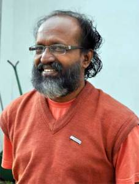
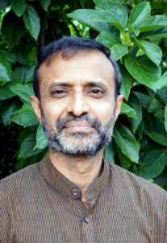
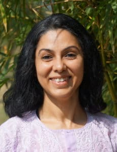
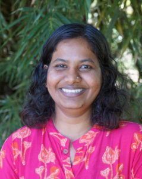

MEET OUR EXPERTS

Krishna Chaitanya
Krishna Chaitanya is a simple Yoga Teacher who thinks of himself as an eternal student in awe of the ocean of yoga wisdom.
His special expertise is in the field of traditional Hatha Yoga, Meditation, Philosophy and Psychology of Yoga-Vedanta.
Since the age of 18, Krishna lived for more than 12 years in some of the best yoga ashrams in India – such as Ramakrishna-Vivekananda Monastery (Calcutta), Bihar School of Yoga (Munger),
Himalayan Tradition of Swami Rama (Rishikesh) and Sivananda Ashram (Kerala).
Though very much rooted in the traditional spirituality, Krishna has been social rebel and original thinker who don’t want to be brainwashed by books, teachers, or spiritual traditions.
Naturally the result is, a roller coaster life in search of Unknown – which took him to various teachers and traditions in many parts of the world.
After being a spiritual vagabond for year, Krishna founded this ashram with the hope that India needs a place for modern yogis to practice ‘simple’ yoga in Mother Nature,
without any cultural and spiritual exaggerations overemphasized in most of the ashrams in India run by Gurus/cults.
Krishna will be teaching Yoga Philosophy, Yoga Anatomy and Teaching Methodology in our Yoga Teacher Training Retreats.
He teaches Yoga and Pranayama sessions to Advanced students who are comfortable with 3 hour sessions.
He is also being regularly invited by other retreats/ashrams around the world to teach and share his 20+ years of life dedicated to practice and teaching yoga.

Swami Prabodh Chaitanya
Swami Prabodh Chaitanya is a Yoga-Vedanta Scholar who also holds a Masters Degree in English literature,
besides his traditional studies in Sanskrit under his teacher H.H Swami Bodhananda Saraswathi of the Chinmaya Mission.
He also took his Bramacharya initiation from H.H Swami Chinmayanandaji, the founder of Chinmaya Mission.
After his initiation, Prabodh Chaithanya furthered his studies of the Upanishads, Bhagavad Gita and Brahmasutras under the guidance of H.H Swami Dayananada Saraswathi of Arsha Vidya Gurukulam.
Since completing his traditional studies in Yoga and Vedanta under these great teachers, Prabodhji lived and taught in Rishikesh and Varanasi for several Years.
Prabodhji will be teaching Meditation and Yoga Sutras in our Yoga Teachers Training courses in India.
He is also a Sanskrit expert and teaches Philosophy classes for Ayurveda and Yoga Retreats in India.

Abin Sur
Abin was drawn into yoga in his early years because of its spiritual roots, metaphysics and the higher esoteric dimensions.
His spiritual quest also led him to get initiated into one of the most respected Raja Yoga traditions, Kriya Yoga of Sri Shyamacharan Lahiri lineage.
After graduating in Commerce, Abin had a checkered career that included teaching math for the GRE/GMAT exams and processing excellence and analytics.
However, his passion for yoga made him take up teaching yoga full time. Apart from teaching in studios,
he has also conducted stress management workshops for leading Indian corporate houses such as Cognizant, TCS, L&T, etc.
As an experienced philosophy teacher, Abin completed 200 hours Yoga Teacher Training at AyurYoga Eco-Ashram, from which he expanded his knowledge of asanas and anatomy.
Inspired by his experience in the ashram, he decided to stay and offer his expertise with the opportunity to learn and practice more.
Abin offers classes on yoga philosophy and psychology, as well as sessions on asanas, pranayama, and meditation.

Ruchi Phool
Ruchi is a Yoga Therapist, Teacher, Wellness Coach and has conducted yoga therapy, workshops, retreats and events across India.
She holds a Diploma in Yoga Vidya from Bharatiya Vidya Bhawan, 200 Hours Yoga Teacher Training from Medical Yoga and S-VYASA, Heartfulness Yoga Teacher Certification,
Diploma in Naturopathy and Yoga from the All India Nature Cure Federation,
Laughter Yoga Teacher certification from the International Laughter Yoga University and is currently pursuing MSc (Yoga) from the S-VYASA University, Bangalore.
She has been a speaker at the WEF Summit (2019), WellnessIndiaExpo (2018), Air India (2017) and various corporate and youth events.
Ruchi designed Yoga based therapeutic programs for the international app 9zest. A support team member of MindSpecialists,
she Ideated, scripted and anchored the Yoga and Wellness module for their mental health video series.
Having a corporate background in Information Technology and entrepreneurship, Ruchi mentors and champions various women related initiatives.
Her pursuit of spirituality started at a fairly young age exposing her to Vipassana, MCKS Yog Vidya and Mindfulness.
She has been a Heartfulness meditation practitioner as well as a volunteer for more than a decade.
Ruchi teaches Yoga asana and pranayama classes, as well as meditation to Ayurveda guests and Yoga Retreat students.
She also gives private consultations for Ayurveda guests for yoga therapy needs.
Ruchi also teaches yoga workshops to Beginners and Intensive Retreat students.

Shobha Bontrapal
Shobha Bontrapal is a 500 RYT certified Yoga teacher as well as Marma and Ayurveda Therapist with advanced training and extensive experienced in Dubai.
She has been in service for many years to help people realize the potential of yoga for maintaining a sound body and mind.
Shobha is the bridge between Ayurveda and Yoga departments at the ashram.
She has been teaching Ashtanga and Hatha practices to students from Europe, Korea and Middle East as well as yoga for women and children.
She believes in creating a non-judgmental and light-hearted environment to optimize learning.
Shobha teaches Yoga asana and pranayama classes to Yoga Teacher Training and Yoga Retreat students, as well as offers Reiki and Thai Massage at AyurYoga Eco-Ashram.
Shobha also oversees the care of Ayurveda guests, ensuring that they are supported throughout their stay.

Dr. Ashwathy Nair
Dr. Ashwathy was born and raised in Kerala, where Ayurveda is deeply rooted. Ashwathy grew up watching her orthodox grandmother making medicinal herbs and decoctions to treat all kinds of ailments.
At the age of 12 she met Doctor Gangadharan Vaidyar who became her mentor and ignited her fascination with Ayurveda as a career.
Dr. Ashwathy obtained her five year degree in Ayurvedic Medicine (BAMS) from Rajiv Gandhi University of Health Science, Bangalore in 2014.
Since then, she worked with well known Ayurveda hospitals such as Kairali Ayurveda in Faridabad (Haryana) and Santhome Ayurveda Arogya Kendra at Sindhudur (Maharashtra).
Besides the regular consulting and overseeing Panchakarma Detox therapies, Dr. Ashwathy is also experienced in treating spinal disorders, arthritis, digestive disorders, obesity, stress, skin disorders, and PCOD.
As the lead Ayurveda doctor at AyurYoga Eco-Ashram,
Dr. Ashwathy offers detailed Dosha diagnosis and creates treatment plans with herbal therapies and oral medication, besides suggesting lifestyle changes to follow up after leaving the ashram.
Ashwathy’s ability to listen and understand the challenges of daily life with compassion makes her one of the busiest people in the ashram.
Besides teaching the Introduction to Ayurveda in our Yoga Teacher Trainings and Yoga Retreats, Dr. Ashwathy is also available for one-to-one consultations for yoga students too.